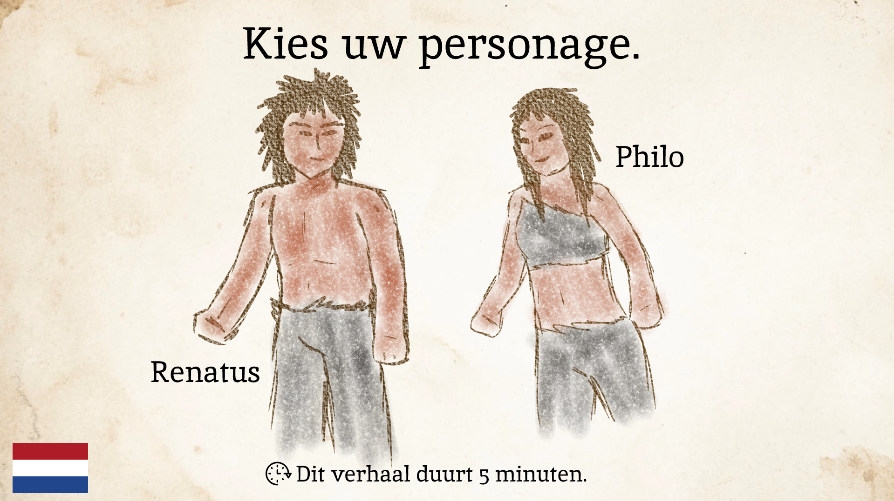
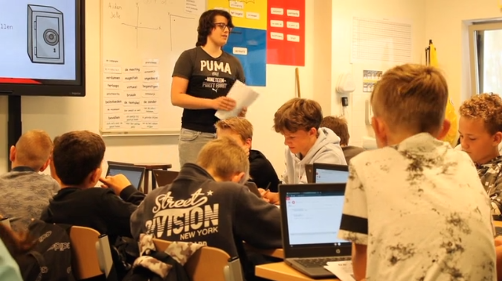

My projects
Here you can see some projects I've worked on over the years. One of these was a group project which I will mention there too. The rest were seperate projects, most being fairly recent.
On the page you'll see the projects I'm still the most proud of. I'll start with my favorites, at least in terms of the work that went into them.
For a good bunch of these projects I've changed things from the original design to fit what I would make of them now. Even a project I did less than two years ago I look back on wanting to change a bunch of things.
I'll mention the changes I made when they're relevant and I'll show examples of the originals when possible. Most projects here are in Dutch, my native language. So while you can try everything, you might not understand all the text.
Lights to the beat
This project was about my artistic journey to make something relating to music. The premise sounds very vague, but I'm happy with how I made it my own.
I started experimenting with how light shone through objects and got my inspiration from there. Light is and has always been very relevant for me. As someone with a great passion for art, light is what allows us to see.
It also has a great influence on how we see color in day to day life. That is what I wanted to "shed some light on" (pun very much intended). I started by filming myself while experimenting with the flash on my phone and some see through objects.
I had some fake gems that made cool shapes appear, some see through paper and plastics and every slightly clear, colored object I could find. Then I took those shapes and started making them in processing.
Then I animated them to the beats of various types of music and added some random elements to make it a form of interesting gen art, while keeping some level of control over how the outcome would look.
I made three scenes. One based on how prisms split light, one based on the shapes of the gems I shone light through in my tests and one based on stars and light in space.
It was a project I had great fun with, am still very proud of and even presented in an exposition with other people from my study.
This project really showed me how much fun it can be to go through a phase of artistic research and make that into a full fledged, personal project.
The project originally worked with an Arduino (a small mini computer) to control everything in the processing sketch, but I reworked the website to work with keyboard instead.
If some things don't work optimally, that is because there was originally different types of buttons for that. All the music used is also themed after light.
Try it out here! (I've added the version without music here, but originally there was a version where the bpm was decided by music)
The story of Renatus
For this project I made a story prototype for a local museum and their prehistoric collection. I decided to make a story about a young man in prehistoric times who was confronted with a choice in what to do with his life.
His clan greatly pressured him into becoming a hunter, like his father. While his uncle was an early form of trader, who the main character greatly looked up to. In the story the user plays through different scenarios and makes choices as the character.
I made the art for the story resemble old cave paintings from people around the time period. The greater idea as a whole was also going to feature a story with a female counterpart who had her own choices to make.
Because it was a prototype I didn't get to finish the story for her and decided to expand the first story more, but I'm still proud of how that one turned out, getting very positive feedback from everyone who tested it.
This experience also tought me how useful user testing could be and how important it is to get feedback from people who aren't involved in the project.
Try it out here!
(If your screen proportions are different, press the z key and it will fit your screen.)

Code for kids: Team Skillit

This is the one group project I've included here. I was responsible for coding the final website and most of the teaching we had to do for this project.
We were asked to make a coding workshop for kids of primary schools around the region. We had to teach kids the basics of using P5JS. We decided to make a fake company called Skillit.
This company would make various types of workshops you'd be able to find on the website. On the website, you can see the page for the workshop we made, though there aren't pages for the other fictional workshops.
I found the teaching aspect of this project particularily fun. Taking the lead in front of the classroom and really seeing how kids enjoy and learn from the workshop was a great experience.
And the workshop turned out to be a huge succes, some kids even went on to continue coding at home in the environment we had set up for them. We went with a cops and robbers theme to give the entire workshop a story and keep it engaging.
I really learned how rewarding teamwork can be from this project, as it was one of the first times I had worked as well in a team as I did during this project.
Try it out here!

My website about immersion in gaming
This was my first project at my study and I look back at the website in two ways. At first with fond memories of what I learned, but also with a big desire to change everything.
The project served as an introductory course to what we would learn at our study. We had to do research, write texts, do the photography, do interviews and design and code the website ourselves.
It was a lot of fun and I learned a ton by working on this project. Because it was my first go at designing a website and at coding, a lot of things aren't nearly as optimal as they could be.
-- write about what I fixed --
Try it out here!
Blender projects
Ah yes, the classic Blender donut. If you don't know what that means, Blender is a free 3d modelling software (among some other things).
A channel on YouTube makes a tutorial every major version where he teaches you to make a 3d donut in the program. I followed the tutorial and made my own version over a summer vacation a while ago.
After that I also made a hologram version of it. These were some lighthearted fun projects I made to have Blender in my skillset for future use.